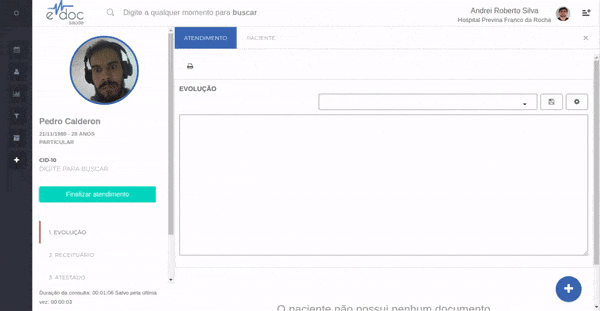

Textos Padrão
Textos Padrão
Dentro de cada documento existe a possibilidade de salvar quantos textos padrão forem necessários.
Os textos padrão são textos de inserção rápida, que garantem uma boa documentação do atendimento sem que o profissional de saúde perca muito tempo realizando essa documentação.
As principais ações de texto padrão são:
1- Criar um texto padrão

- Insira o texto que deseja salvar para reutilização
- Clique no botão de salvar texto
- Insira o título do texto e salve
Atenção
- Todo o texto que estiver na caixa de texto será salvo sob o título inserido. Caso queira salvar apenas parte de um texto, primeiro escreva apenas a parte que deseja salvar, finalize a criação do texto padrão e depois complemente com a parte que não será salva
2- Selecionar um texto padrão

- Clique na lista de textos salvos
- Busque o texto desejado
- Clique sobre o título do texto na lista para inseri-lo abaixo do texto existente
3- Editar um texto padrão

- Clique sobre o botão de configurações de texto padrão
- Selecione o texto que deseja editar no topo da aba de edição
- Edite à vontade
- Salve as novas configurações
4- Remover um texto padrão

- Clique sobre o botão de configurações de texto padrão
- Selecione o texto que deseja editar no topo da aba de edição
- Clique no botão de excluir texto
- Confirme a exclusão permanente do texto